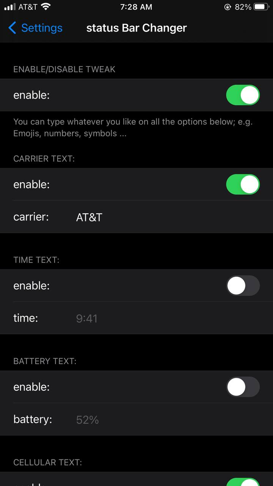
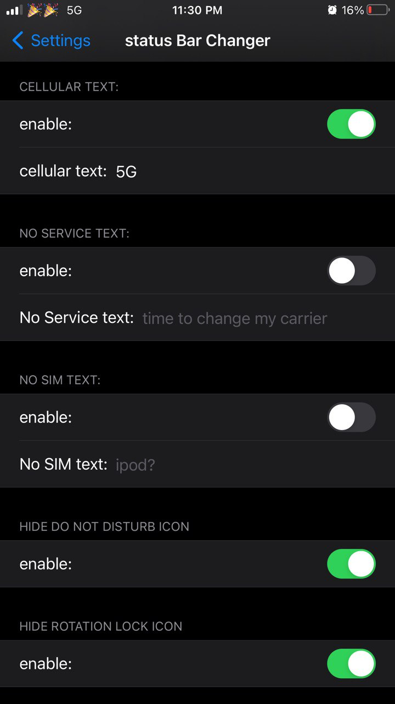
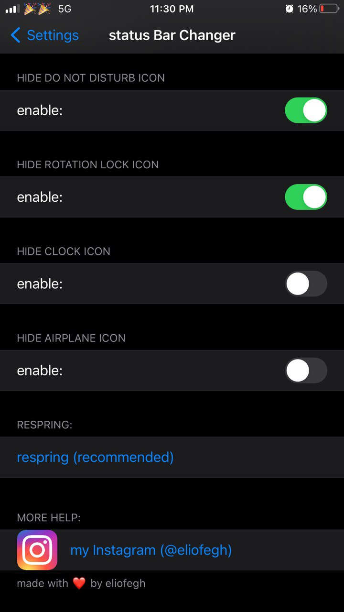
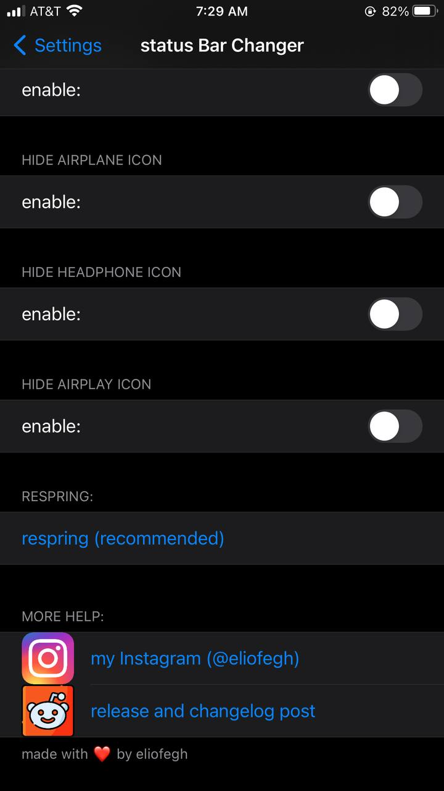

Compatible with iOS 12 --> iOS 14.8




1.7 -remove airplane icon
-change "No Service" text
-change "No SIM" text
-Major bug fixing and code cleanup
1.6 -Option to remove dnd icon
-Option to remove rotation lock icon
-Option to remove alarm icon